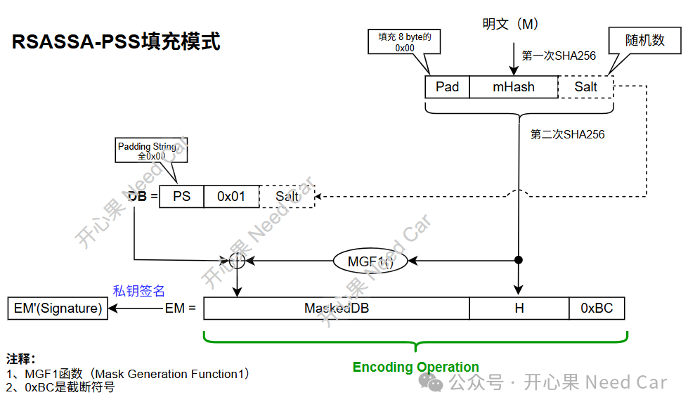

开心果 Need Car · 2025-12-08T06:23:00+08:00 · 微信原文
1、RSA2048+SHA-256+PSS通识
SHA-256（Secure Hash Algorithm）可以对任意输入长度数据生成256 bit固定输出。
（三）PSS填充
对于RSA2048非对称算法，通常使用PKCS（Public-Key Cryptography Standards） #1 v1.5 或者PSS填充模式。
由于PKCS#1 v1.5的填充方式固定，安全性弱，所以，对软件签名时，往往使用安全性更高的RSASSA-PSS填充方案，以此确保：即使相同的明文，每次生成的签名值不同。
所以，对于RSA的软件验签，其实是讨论非对称算法、hash值以及填充模式组合的问题。
2、RSA2048+SHA-256+PSS签名验签原理
（一）签名流程
RSA2048+SHA-256+PSS签名流程如下所示：

具体的签名流程：
1、为了加速签名流程，首先使用SHA256对原始的软件数据进行hash计算，得到mHash；
2、生成随机的盐值（32 bytes）。
注意：推荐的盐值长度等于哈希函数的输出长度。使用SHA256计算时，输出的固定长度是32 bytes，所以，对应的盐值长度也必须是成32 bytes。
3、对Pad(8 bytes的0x00)+mHash(32 bytes)+Salt（32 bytes）进行二次SHA256计算，得到H；
4、将PS+0x01+Salt组合成DB值；
5、H作为MGF1()函数输入，得到的输出与DB进行异或操作，得到MaskedDB；
6、MaskedDB+H+0xBC(截断符号)组合成EM，至此，完成了Encoding Operation（编码操作），即：EMSA-PSS-ENCODE。
之后，使用私钥对EM进行签名计算，得到签名值EM'（长度256 bytes）;
提示：RSA私钥有两种表示形式，如果使用简单的表示形式，私钥签名和加密的数学处理一样，均符合 result = m^d mod n，此时的签名可“看作加密”。本文基于私钥简单形式讨论，即：私钥（n,d）。
7、发送端将签名值EM'连同原始数据发送到接收端，注意：RSA2048对应的公钥提前灌装在接收端。
补充：
RSA是基于大整数数学的非对称加密算法。当使用2048位密钥（即 256 字节）进行加密时，无论加密的原始数据有多小，加密后的密文长度始终是256 字节。这是因为RSA加密的结果是一个模n的大整数，n是密钥的一部分，其长度就是密钥长度。
以PKCS#1 v1.5 填充为例，最大可加密数据长度 ≈ 密钥长度 - 11 字节，对于2048位密钥：最大明文长度 ≈ 256 - 11 = 245 字节；RSAES-OAEP（加密），最大加密长度：k−2hLen−2字节（k是密钥长度，hLen是哈希输出长度）。
RSA2048加密后的数据是一个固定长度的256字节的字符串（本质上是一个二进制数据块），这个字节串可能包含不可打印字符，比如 \x00, \xFF，甚至控制字符。一般需要进行Base64 编码，让其可以变得安全、可读、可传输。Base64 会把不可见的字节转换成可打印的字符。
（二）验签流程
1、使用RSA2048对应的公钥对EM'进行解密，得到EM；
2、判断EM的截断符号0xBC是否正确，如果正确继续处理，否则，验签失败；
3、提取MaskedDB和H，为了便于区分，这里标记为MaskedDB_R和H_R；
4、使用MGF1()函数对H_R进行计算，得到的结果与MaskedDB_R进行异或操作，得到DB' ，期望DB'= PS+0x01+Salt_R；
5、判断收到的PS和0x01是否符合预期，符合继续处理，否则，验签失败；
6、对收到的明文进行SHA256计算，得到mHASH'，Pad+mHASH'+Salt_R构成M'，对M'进行SHA256计算，如果SHA256（M'）== H_R，验签通过，否则，验签失败。
拓展补充：
有人说，私钥加密，公钥可以解密；公钥加密，私钥可以解密。有啥区别呢？注意，如果使用私钥加密，那么凡是持有公钥的第三方均可以解密，不管这个第三方是否合法。这也意味着，信息可能被泄露。
往期精彩回顾